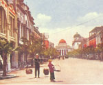

呂清夫 撰文

台北能夠興建摩天樓，我們自然樂觀其成，但須融入整個大環境。台北近日曾有財團想在信義計畫區蓋一棟全球最高的大樓，亦即「台北國際金融中心」，高達508公尺。奈因航道的關係，不能建得那麼高，只能降高以求。這次的提案使人想起了一九八九年的往事，那時台北市捷運局也想蓋一棟全球最高的「花開富貴一二六層超高大廈」（位於現在的復興忠孝站），而且請的建築師都是同一個人，只是當時卻引起了很多的爭議。當時某報曾有這樣的報導︰「（這座大樓）被譏評為英雄主義式的突發奇想，迎合好大喜功，凡事但求第一而不求品質的社會心態，而非基於實際的都市發展需要。建築業者亦提出質疑，認為國內高樓的設計與施工水準並不穩定，有時粗糙的程度令人驚心動魄，此次奢求建造世界第一高樓著實令人擔憂。」不過，事隔多年，大家似乎忘了這些爭議。西方學者也未必完全支持摩天樓，寫過「美國大都市的生與死」的J.Jacobs便說，洛克菲勒大樓不過是被四周車流所包圍的孤島。事實上摩天樓還有交通負荷量的問題，所以國外興建摩天樓的時候會考慮三個問題，那就是不能增加附近的交通量、不能擾亂優美景觀、或鄰近建築的天際線，並能創造出自己的天際線。所以科隆大教堂附近的建築不能蓋得比它高，因為摩天樓將擾亂了這座教堂的美感；倫敦西敏寺與國會議事堂因受到鄰近辦公大樓的大軍壓境而備受詬病。在過去，台北總統府附近的建築也不能比它高，不過那是基於政治、安全的理由。●意象鮮明的都市風貌：館前路的今昔之感但是國外的限制更多，英國對於都市開發或更新，便有很多審查規範，例如︰新建築物有沒有配合周遭建築的一般大小與高度？新建築物的材料、形式、色彩能否跟周遭環境取得調和？新建築物的窗子、門框、立面是否與鄰接的建築相諧調？是否在平頂的、有腰線的舊建築群中硬性塞入尖頂建築而破壞了整體景觀？至於像西敏寺附近的特區則規定更嚴，例如︰連鎖店之類到處雷同的店面不受歡迎。工廠生產的規格化鋁板所搭成的店舖也不受歡迎，使用鋁板時必須電解成青銅色或咖啡色才行。如果把兩棟建築物打通成一棟時，外觀必須保持兩棟的形式。勉強拼湊傳統款式的的商店設計不受歡迎。使用磚塊、木材、石板瓦等傳統材料要比金屬、大理石、塑膠更受歡迎……。這些規範對我們來說似乎是天方夜譚，因為大家蓋房子一直非常自由，由此使得光復後的台北市容簡直像個超級大違建。過去的台北並非這樣，從一九三○年間的一張台北館前路照片看來，可知當時採用的是巴洛克式軸線的道路規劃（圖一）。市政府都發局的林欽榮副總工程司在對照今昔景象以後曾說︰「兩者相較，且撇開思古幽情之心態而論，著實有『今不如昔』的慨嘆。」（見林著「都市設計在台灣」）他認為那是因為當時依循一定的社會文化共識，故能打造集體意象鮮明的都市風貌。我們在博物館對面、土地銀行隔壁的建築物頂上也可以看到一個圓頂的望樓（圖二），跟博物館的圓頂前後呼應，構成十分優美的天際線。可惜在光復以後，這個美麗的望樓就跟其他周遭的審美要素一樣不見了，只留尚具實用性的建築物，直到今天。林氏還認為，光復以後由於缺少了社會共識，同時隨著營建技術的進步，建築流行的追逐，加上都市計畫對於文化特質、公共空間的忽略，所以才會搞亂了原先的佈局。愚意以為，起先是因為戰爭的多重破壞，接著是美育的徹底失敗，所以造成了難堪的後果。所以當務之急在於找回都市設計的默契、與公共空間的品質。●建築外型隸屬於城市：馬偕台北醫療行政大樓的歷史記憶一九八八年市政府都發局正式成立「都市設計審議委員會」，專為都市開發的環境品質把關，但因公益與私利的衝突，也一度引起了高度的反對聲浪。不過對照西方的無所不管，我們的做法已算非常溫和。只是都發局在高度限制、容積移轉等非關景觀的議題上已花去不少工夫，對於非關私利的景觀問題似乎不易切入。以「馬偕台北醫療行政大樓」為例，當初的設計可以說顧吃不顧穿，內部設計沒有話說，外觀設計則是硬邦邦的豆腐乾，所以它跟中山北路的景觀或其本身的歷史意象都不搭調。大家似乎忘了建築內部固然屬於業主，但是建築外型則是屬於城市的，這也是台灣建築何以一直呈現麻木的外型。本來自己應做的、同時可以提升形象的工作卻需要別人來提醒，這可能也是美育失敗的結果罷。至於馬偕大樓則在經過委員會的一番協商之後，才在地面層設置鏤空的景觀牆，再現了原有的拱形騎樓空間，形成所謂的馬偕符號，並保留居民的歷史記憶。不過，其中仍舊可以看出拼湊的痕跡，這在英國還是屬於不受歡迎的東西。因之，對於台北的營造，我們實在沒有必要或本錢去做誇大的賭注，倒不如一點一滴，一磚一石，踏實去做。當整個社會都具有共識，整個城市都渾成一體的時候，這個營造便水到渠成了。當所有的建築都不需要都發局來傷腦筋時，台北的地標建築自然一一湧現，這時還要做的事情恐怕只有種種樹而已。羅馬自能孕育米蓋朗基羅，自能造就聖彼得大教堂與聖彼得廣場。而任何英雄式的表現都不如公共性的關照來得重要，只要台北變得更適於人住，便是營造成功的時候了。●十年樹木，百年造鎮一個城市如要更適於人住，那麼所謂的街道傢具就要相當考究，我們應當不以其小而不為，例如號誌燈、交通標誌、交通指揮台、公車亭、圍欄、行人專用道、停車場等交通設施，或如電線桿與電線、街燈、路邊箱形電力設備、電話亭、郵筒、郵票販賣機等電信設施，再如雕刻、噴泉水景、植栽、街路圖、涼亭、長椅等公共藝術，圍籬、公廁、垃圾桶、消防栓……等雜項設施都是。就公共藝術來說，公共性與實用性非常重要，至於臨時拼湊一些雕刻，倒不如把錢用在建築物的細部設計上。交通設施方面，汽機車交通雖然方便，卻也付出了重大的社會成本，甚至成為都市景觀的殺手。如混雜、污染、噪音、交通事故、古蹟破壞（如林安泰古厝）等是。今後首先要做的恐怕是勻出行人專用道，讓行人可以免於被撞的恐懼。英國住宅區還規定人行道要有兩米寬，以便於乳母車的錯車，東京的馬路雖然小鼻子小眼睛，一樣可以勻出人行道來。其次要整頓停車場，還給馬路以應有的空間，如果區公所、圖書館、郵局等公家機關都沒有停車場，那不但是天下的笑話，也是最壞的示範，難怪很多民間大樓的地下停車場都改作超市或商場，買車自備停車場也是光說不練，只要車商透過民代施壓，一切都在原地踏步，連超高污染、超低成本的二重程機車也公然上市。捷運應該是解決台北交通之癌的不二法門，它的快速、準時、乾淨可使台北市民找回在公車中失去的自尊，淡水線完成，使得車站建築開始有了品味，中和線通車，使得中正橋不再是交通瓶頸。我們希望捷運還可做得密一點，變成地下鐵路網，由此都市景觀的營造才能脫胎換骨。過去我們常因庸俗的理由而破壞古蹟，今後我們要學羅馬人那樣可以為一塊古代的石頭而繞道開路。歷史上人類曾以社會的力量去保護個人的權力，在今天我們可能要從個人手中去保護公共的環境。十年樹木，百年造鎮，但願台北，永續發展！（圖說）一九三○年間的館前路，採用的是巴洛克式軸線的道路規劃。